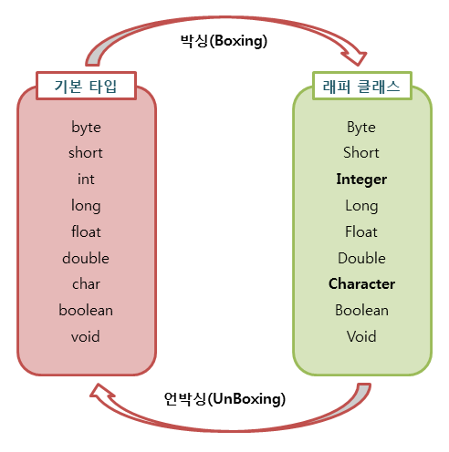

동일성과 동등성
동일성(Identity)은 같은 메모리 주소(참조)를 가리키는지, 동등성(Equality)은 값이 같은지를 뜻합니다.
동일성 (==)
String str1 = new String("Java");
String str2 = new String("Java");
System.out.println(str1 == str2); // false (서로 다른 객체)
String str3 = str1;
System.out.println(str1 == str3); // true
String str4 = "Java";
String str5 = "Java";
System.out.println(str4 == str5); // true (문자열 상수 풀)동등성 (equals())
String str1 = new String("Java");
String str2 = new String("Java");
System.out.println(str1.equals(str2)); // truehashCode와 equals
hashCode()는 해시 기반 컬렉션에서 버킷을 찾을 때 쓰는 정수입니다. equals가 true면 hashCode도 같아야 합니다.
| 항목 | equals() | hashCode() |
|---|---|---|
| 역할 | 값이 같은지 | 해시 테이블용 정수 |
| 반환 | boolean | int |
| 오버라이드 | 값 비교 시 | equals 오버라이드 시 함께 |
equals만 오버라이드하고 hashCode를 그대로 두면, HashSet/HashMap에서 논리적으로 같은 객체가 중복 저장될 수 있습니다.
class Person {
String name;
Person(String name) { this.name = name; }
@Override
public boolean equals(Object obj) {
if (this == obj) return true;
if (obj == null || getClass() != obj.getClass()) return false;
Person person = (Person) obj;
return this.name.equals(person.name);
}
}
HashSet<Person> set = new HashSet<>();
set.add(new Person("Alice"));
set.add(new Person("Alice"));
// hashCode 미구현 시 size가 2가 될 수 있음toString()
객체를 문자열로 표현합니다. 기본 구현은 클래스명@해시코드 형태이므로, 디버깅·로그를 위해 자주 오버라이드합니다.
@Override
public String toString() {
return "Person{name='" + name + "', age=" + age + "}";
}main()이 static인 이유
JVM이 진입점을 찾을 때 아직 인스턴스가 없습니다. static이면 클래스 로드만으로 main을 호출할 수 있습니다.
상수와 리터럴
| 구분 | 리터럴 | 상수 |
|---|---|---|
| 의미 | 값 그 자체 (10, "Hi") |
final로 고정된 변수 |
| 예 | true, 3.14 |
static final int MAX = 100; |
Primitive Type과 Reference Type
기본형은 값이 스택에 직접 쌓이는 형태로 다루어지고, 참조형은 힙의 객체 주소를 참조합니다.
| 타입 | 크기/비고 | 기본값 |
|---|---|---|
| byte | 1 byte | 0 |
| short | 2 byte | 0 |
| int | 4 byte | 0 |
| long | 8 byte | 0L |
| float | 4 byte | 0.0f |
| double | 8 byte | 0.0 |
| char | 2 byte | '\u0000' |
| boolean | JVM 구현에 따름 | false |
참조형: 클래스, 배열, 인터페이스 타입 변수, enum 등 — null 가능.
AutoBoxing과 성능

int i = 10;
Integer num = i; // 오토박싱
int j = num; // 오토언박싱루프 안에서 Wrapper를 매번 쓰면 박싱 비용이 누적됩니다. 동일 타입으로 연산하는 편이 유리합니다.
Long sum = 0L;
for (long i = 0; i < 1_000_000; i++) sum += i; // 느림
long sum2 = 0L;
for (long i = 0; i < 1_000_000; i++) sum2 += i; // 상대적으로 빠름Call by Value
Java는 항상 값 복사로 인자를 넘깁니다. 기본형은 값이 복사되고, 참조형은 참조값(주소)이 복사됩니다.
public static void modifyValue(int num) {
num = 20;
}
int original = 10;
modifyValue(original); // original은 여전히 10public static void modifyPerson(Person p) {
p.name = "Alice";
}
Person person = new Person("Bob");
modifyPerson(person); // person.name은 Alice (같은 객체를 가리킴)